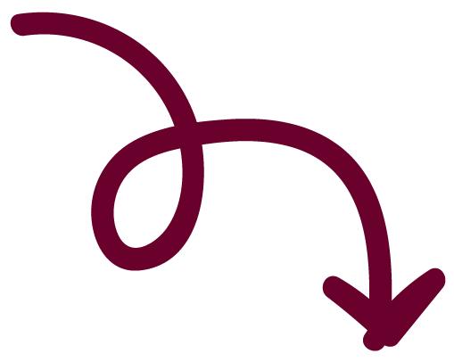

Over mij
Ik ben Anne van der Zwaan, 20 jaar en tweedejaarsstudent Communicatie en Multimedia Design. Met veel plezier werk ik aan projecten rond UX- en UI-design, prototyping, webdesign en visual design. Ik vind het leuk om creatieve ideeën om te zetten in gebruiksvriendelijke én visueel sterke ontwerpen, vooral wanneer er een duidelijke doelgroep en set aan eisen is waar ik naartoe kan werken.
Door mijn event-achtergrond ben ik gewend om te organiseren, vooruit te denken en het overzicht te houden. Ik hou van perfectie en zorg er graag voor dat alle puntjes op de i staan: van de eerste schets tot de laatste pixel wil ik dat alles klopt. Die combinatie van ontwerpen en strak regelen zorgt ervoor dat ik oog heb voor zowel detail als het geheel en de planning eromheen.
In projecten werk ik gestructureerd en neem ik graag verantwoordelijkheid. Ik vind het fijn om samen keuzes te onderbouwen, feedback te verwerken en stap voor stap tot een beter eindresultaat te komen, maar ik kan ook goed zelfstandig doorpakken.
Naast mijn studie sta ik graag op de tennisbaan en breng ik veel tijd door met vrienden. Ik ga graag naar festivals en leuke uitjes, maar kan ook genieten van een rustig avondje opladen. Die balans geeft mij energie en die neem ik weer mee in mijn werk: enthousiast, betrokken en met aandacht voor zowel sfeer als resultaat.